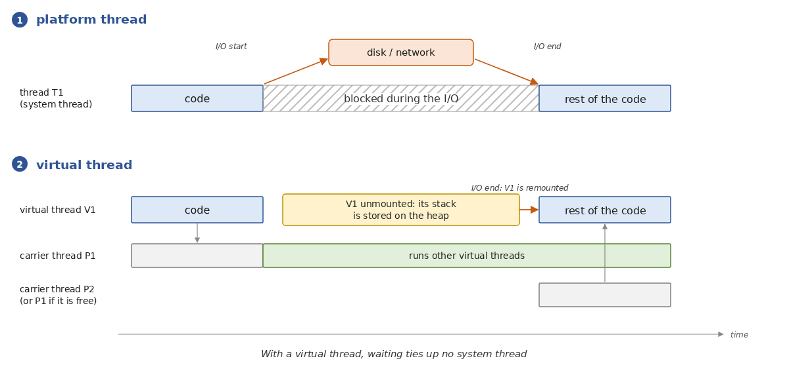

9. Programación asíncrona
El capítulo anterior presentó los hilos: podemos ejecutar varios fragmentos de código «al mismo tiempo», sincronizarlos y asignar tareas a un pool de hilos mediante un executor ([ExecutorService]). Este capítulo aborda un problema relacionado pero distinto: cómo escribir un programa que espera mucho (al disco, a la red o a una base de datos) sin ocupar hilos durante esas esperas.
Java no dispone de palabras clave del lenguaje para esto (otros lenguajes, como C# o JavaScript, tienen las palabras clave [async] y [await]). Ofrece dos soluciones, que se complementan y se presentan ambas en este capítulo:
- la clase [CompletableFuture<T>] (Java 8, mejorada desde entonces) representa una operación en curso cuyos pasos posteriores se componen mediante métodos de retrollamada: «cuando el resultado esté listo, haz esto, luego aquello» ([thenApply], [thenCompose], [thenCombine], [allOf]…). Ningún hilo espera: es la finalización de la operación la que desencadena el siguiente paso;
- los hilos virtuales (Java 21), por su parte, permiten escribir código bloqueante y secuencial que se lee de arriba hacia abajo: cuando un hilo virtual espera una operación de entrada/salida, la JVM lo desacopla del hilo del sistema que lo estaba ejecutando (su «hilo portador») y libera ese hilo para otro hilo virtual. Esto permite tener cientos de miles de hilos virtuales con solo unos pocos hilos del sistema. Esta es la solución moderna de Java al problema que otros lenguajes resuelven con [async] / [await].
Estas herramientas están hoy en todas partes: los capítulos siguientes las utilizarán para acceder a bases de datos, escribir servidores TCP que atienden a cada cliente mediante un hilo virtual, clientes web con [java.net.http.HttpClient] y servicios web con Spring Boot.
Todos los ejemplos de este capítulo son archivos fuente compactos ([Async01.java], [Async02.java]…) que se ejecutan con [java AsyncNN.java] en la carpeta [09-async]. Muchos de ellos miden tiempos de ejecución con [System.nanoTime()]: los milisegundos mostrados varían de una ejecución a otra y de una máquina a otra (los ejemplos se ejecutaron en una máquina de dos procesadores). Lo que importa son los órdenes de magnitud: 1 segundo o 10 segundos, 300 ms o 0 ms.
9.1. Por qué la asincronía
9.1.1. Operaciones que esperan
Un programa realiza dos tipos de trabajo:
- tareas de cálculo, que ocupan el procesador: ordenar una lista, calcular un impuesto, analizar un texto;
- entrada/salida (E/S), que consiste esencialmente en esperar a un dispositivo periférico: leer un archivo del disco, enviar una solicitud a un servidor web y esperar su respuesta, ejecutar una consulta SQL en un servidor de base de datos.
Los órdenes de magnitud son muy diferentes. Un procesador ejecuta unos pocos miles de millones de instrucciones por segundo. Una operación de lectura en un disco (SSD) toma del orden de una décima de milisegundo; un viaje de ida y vuelta por una red local toma una fracción de milisegundo; un viaje de ida y vuelta a un servidor ubicado al otro lado del país toma unas pocas decenas de milisegundos; y una consulta SQL algo compleja puede tardar a veces varios segundos. Durante estas esperas, el procesador habría podido ejecutar millones de instrucciones.
Cuando un programa lee una línea a través de una conexión de red mediante un método bloqueante, el hilo que realiza esta lectura queda bloqueado: no hace nada, pero sigue existiendo. Un hilo «clásico» de Java —ahora llamado «hilo de plataforma»— es un hilo del sistema operativo: ocupa memoria (su pila, del orden de un megabyte), es reconocido por el sistema y, sobre todo, deja de estar disponible para hacer cualquier otra cosa. Esto no es un problema en un pequeño programa de consola que hace una sola cosa a la vez. Se convierte en un problema mucho mayor en dos situaciones:
- en un servidor: cada cliente atendido por un hilo bloqueado deja ese hilo inutilizado. Si el pool de hilos del servidor tiene N hilos y los N hilos están realizando una operación bloqueante, no queda ningún hilo disponible para un nuevo cliente. Un servidor moderno atiende miles de solicitudes simultáneas: esto es posible porque sus operaciones de espera no ocupan hilos del sistema;
- en una interfaz gráfica de usuario: un único hilo —el hilo de la interfaz (el «Event Dispatch Thread» de Swing, el «JavaFX Application Thread»)— gestiona los clics y vuelve a dibujar las ventanas. Si una descarga lo bloquea, la ventana se congela.
La asincronía consiste en iniciar la operación de E/S, liberar el hilo del sistema mientras esta está en curso (el hardware y el sistema operativo no lo necesitan para transferir los datos) y luego retomar el trabajo cuando la operación ha terminado, posiblemente en otro hilo del sistema:

- En [1], el hilo de plataforma T1 inicia la E/S y permanece bloqueado hasta que esta termina;
- en [2], el hilo virtual V1 inicia la E/S; la JVM lo desacopla de su hilo padre P1, que puede entonces ejecutar de inmediato otros hilos virtuales. Cuando la E/S termina, la JVM vuelve a acoplar V1 a un hilo portador libre, P2 (que también podría ser P1), y V1 continúa su ejecución inmediatamente después de la instrucción bloqueante, como si nada hubiera pasado.
El programa [Async01.java] mide la diferencia en 100 operaciones, cada una de las cuales espera un segundo (la espera simula una E/S). Utiliza instrucciones que explicaremos más adelante en este capítulo ([Executors.newVirtualThreadPerTaskExecutor], [CompletableFuture]): aquí nos interesan principalmente los resultados.
Resultados:
Comentarios:
- Líneas 12–22: la solución más simple: un hilo de plataforma por operación. [Thread.ofPlatform().start(task)] (Java 21) crea e inicia un hilo, igual que [new Thread(task).start()]. Cada hilo ejecuta [Thread.sleep(1000)]: queda bloqueado durante un segundo. Las 100 esperas ocurren simultáneamente y todo el proceso toma exactamente un segundo (línea 4 de los resultados), pero al costo de 100 hilos del sistema adicionales: la JVM tiene 106 (línea 3). Con 10.000 operaciones, harían falta 10.000 hilos del sistema;
- Líneas 24–32: las operaciones se asignan a un pool de 10 hilos ([Executors.newFixedThreadPool(10)]), un tamaño razonable para cálculos. Pero aquí estos hilos no calculan: están inactivos. Las operaciones esperan un hilo libre, en lotes de 10, y todo el proceso tarda… diez segundos (línea 6). Esto se conoce como «inanición del pool de hilos», el defecto más común en los servidores que mezclan pools de hilos con E/S bloqueante. El método [close()] de un executor (Java 19), llamado al salir del [try], rechaza nuevas tareas y espera a que terminen las que se han enviado;
- Líneas 34–42: un hilo virtual por operación. [Executors.newVirtualThreadPerTaskExecutor()] (Java 21) devuelve un executor que crea un nuevo hilo virtual para cada tarea enviada. El código de la tarea es el mismo que en el paso 1: un [Thread.sleep(1000)]bloqueante. Sin embargo, un hilo virtual bloqueado no ocupa un hilo del sistema: la JVM lo desacopla de su hilo portador. Las 100 esperas duran un total de un segundo (línea 8) y la JVM cuenta solo 10 hilos del sistema (línea 7): sus hilos de servicio y los dos hilos portadores —uno por procesador— que ejecutaron los 100 hilos virtuales. Los hilos virtuales no se incluyen en este recuento: son objetos de la JVM, no hilos del sistema;
- líneas 44–52: la misma espera sin hilos en espera. [new CompletableFuture<Void>()] crea una operación «pendiente» y [completeOnTimeout(value, timeout, unit)] (Java 9) solicita que se complete con el valor especificado una vez que expire el tiempo de espera. Un único temporizador de la JVM gestiona los 100 tiempos de espera. [CompletableFuture.allOf(...)] devuelve una operación que se completa cuando todas las demás han terminado, y [join()] espera a que termine. Todo el proceso dura un segundo (línea 10), con un solo hilo adicional respecto al paso 3: el hilo del temporizador (línea 9);
- líneas 55–62: [Thread.sleep] puede lanzar la excepción verificada [InterruptedException] si el hilo es interrumpido mientras duerme (hablaremos de ello más adelante en la sección sobre la cancelación); el método [waitFor] la intercepta para que las lambdas de las líneas 16, 28 y 38 no tengan que tratarla;
- Líneas 64–71: [ManagementFactory.getThreadMXBean().getThreadCount()] devuelve el número de hilos de plataforma activos de la JVM. La clase [ManagementFactory] pertenece al módulo [java.management]: un archivo fuente compacto importa automáticamente solo el módulo [java.base], de ahí la importación de la línea 3.
Recordemos la lección: para esperar, no hay que bloquear ningún hilo del sistema. La asincronía no hace que la E/S sea más rápida; permite gestionar simultáneamente un gran número de operaciones de E/S con pocos hilos del sistema, manteniendo disponibles los hilos que la aplicación necesita. Java ofrece dos enfoques para ello: crear [CompletableFuture] (paso 4) o escribir código bloqueante ordinario ejecutado por hilos virtuales (paso 3).
9.1.2. Varios modelos sucesivos
Java ha ofrecido varias maneras de escribir código que espera sin bloquear. Las más antiguas todavía se encuentran en el código existente, por lo que es útil reconocerlas.
Modelo | Introducción | Principio |
[Future] y Runtimes | Java 5 (2004) | [ExecutorService.submit] asigna una tarea a un pool de hilos y devuelve un [Future<T>], que representa el resultado futuro. Pero la única manera de obtener este resultado es esperar, de forma bloqueante, con [get()]. |
Métodos de retrollamada de NIO.2 | Java 7 (2011) | Los canales asíncronos ([AsynchronousSocketChannel], [AsynchronousFileChannel]) inician una operación y reciben un objeto de retrollamada ([CompletionHandler]) cuyo método [completed] o [failed] es llamado por un hilo de un pool una vez que la operación ha terminado. |
[CompletableFuture] | Java 8 (2014) | un [Future] que usted mismo puede finalizar y cuya secuencia se compone de métodos de retrollamada ([thenApply], [thenCompose], [exceptionally]…); los streams reactivos [java.util.concurrent.Flow] (Java 9) son una extensión de esto para secuencias de valores. Las bibliotecas reactivas (Project Reactor, utilizada por Spring WebFlux, RxJava) se basan en los mismos conceptos. |
hilos virtuales | Java 21 (2023) | de código bloqueante ordinario, ejecutado por hilos virtuales: la JVM libera el hilo del sistema durante las esperas. Este es hoy el modelo recomendado para las aplicaciones nuevas. |
concurrencia estructurada | Versión preliminar de Java 21 a Java 25 | [StructuredTaskScope] organiza un grupo de subtareas ejecutadas por hilos virtuales como un único bloque de código, con gestión de errores y cancelación compartidas (véase el final del capítulo). |
Los métodos de retrollamada tienen un inconveniente: el código queda fragmentado. Lo que naturalmente se lee como «conectar, luego leer, luego mostrar» se convierte en un método que inicia la conexión, un método de retrollamada que inicia la lectura y otro método de retrollamada que muestra el resultado; las variables deben compartirse entre estos métodos, las excepciones se capturan en lugares distintos y un simple bucle («leer mientras haya datos») se convierte en un método de retrollamada que se llama a sí mismo de forma recursiva. [CompletableFuture] hace más legible esta fragmentación al encadenar los pasos; los hilos virtuales la hacen desaparecer: el código asíncrono adopta la forma de código síncrono, porque es código síncrono.
El programa [Async02.java] implementa el mismo cliente TCP con dos enfoques extremos: primero, mediante los métodos de retrollamada de NIO.2 y luego mediante código bloqueante ejecutado por un hilo virtual. También contiene un pequeño servidor, ejecutado por un hilo, que responde a dos clientes (la programación de red se tratará en detalle en el capítulo 12; por ahora basta con saber que un cliente se conecta al servidor y lee el mensaje que este le envía).
Resultados:
Comentarios:
- Líneas 8–23: el servidor. Escucha en el puerto 27500 de la máquina local ([InetAddress.getLoopbackAddress()], es decir, 127.0.0.1), acepta dos conexiones una tras otra y envía a cada cliente un mensaje de bienvenida después de medio segundo. Lo ejecuta un hilo de plataforma llamado [server]. La forma [try (listener)] (Java 9) cerrará el [ServerSocket] declarado en la línea 9 al final del bloque;
- líneas 26–32: el cliente escribe mediante métodos de retrollamada:
- línea 27: un
*[AsynchronousSocketChannel]* es un canalTCPcuyas operaciones son asíncronas; - línea 29: [connect] inicia la conexión y devuelve el control de inmediato (línea 3 de los resultados). Sus dos últimos parámetros son un objeto arbitrario que recibirá el método de retrollamada (aquí, el propio canal) y el objeto de retrollamada, de tipo [Connected];
- línea 32: el hilo principal ya no tiene nada que hacer. Para asegurarse de que el programa no termine antes de que concluya el intercambio, espera una señal del último método de retrollamada: un [CountDownLatch] inicializado en 1 (línea 5), cuyo método [await] bloquea el hilo que lo llama hasta que otro hilo llama a su método [countDown];
- línea 27: un
- líneas 50–64: el objeto de retrollamada de la conexión implementa la interfaz [CompletionHandler<V, A>], donde [V] es el tipo del resultado de la operación ([Void] para una conexión) y [A] es el tipo del objeto pasado. Su método [completed] se llama si la operación tiene éxito, y su método [failed] se llama si falla. Una vez conectado, la lectura se inicia con [read] especificando un segundo objeto de retrollamada de tipo [Received] (línea 56);
- líneas 66–85: el objeto de retrollamada de lectura recibe el número de bytes leídos, muestra el mensaje, cierra el canal y libera el hilo principal. Las clases [Connected] y [Received] son clases internas de la clase implícita del archivo compacto: tienen acceso a sus campos [buffer] y [end] y a su método [display];
- los resultados muestran que los métodos de retrollamada son ejecutados por hilos distintos del hilo principal (hilos del pool de la JVM dedicado a los canales asíncronos, llamados [InnocuousThread-N]);
- líneas 34–46: el mismo cliente, escrito con un [Socket] estándar y operaciones bloqueantes ([new Socket(...)] conecta, [read] espera datos), ejecutado por un hilo virtual creado con [Thread.ofVirtual().start(task)] (Java 21). El código se lee de arriba hacia abajo como código síncrono; las variables son variables locales ordinarias; los errores se manejan con un único [try / catch]; no hay métodos de retrollamada ni señales que gestionar;
- líneas 87–92: cada visualización lleva como prefijo el hilo que la ejecuta. Para un hilo virtual, [toString()] devuelve una descripción con la forma [VirtualThread[#28]/runnable@ForkJoinPool-1-worker-1]: el número del hilo virtual, su estado y su hilo anfitrión actual. Las líneas 6 y 7 de los resultados muestran el mismo hilo virtual n.º 28, transportado primero por [worker-1] y luego por [worker-2]: mientras esperaba la respuesta del servidor, fue desacoplado de su primer portador y luego reacoplado a otro.
No es necesario conservar la interfaz [CompletionHandler]. Si debe usar una API que solo ofrece este modelo, conviértala a [CompletableFuture] (lo haremos en [Async17.java]) o utilice su versión bloqueante en un hilo virtual.
9.2. Tareas futuras: Future y CompletableFuture
Un [Future<T>] (interfaz del paquete [java.util.concurrent], Java 5) es un objeto que representa el resultado —de tipo [T]— de una operación en curso o terminada. Ya lo encontramos en el capítulo anterior: es lo que devuelve el método [submit] de un executor. Se puede consultar (¿ha terminado?, ¿tuvo éxito?), cancelar ([cancel]) y esperar su resultado ([get]), pero nada más: la única forma de utilizar el resultado es bloquear un hilo hasta que esté disponible.
La clase [CompletableFuture<T>] (Java 8) implementa [Future<T>] y añade dos capacidades esenciales:
- se puede finalizar manualmente, con un resultado ([complete]) o con una excepción ([completeExceptionally]);
- se le puede asociar una operación de continuación —una función que se ejecutará cuando el resultado esté disponible ([thenApply], [thenAccept], [thenCompose]…)—, que produce un nuevo [CompletableFuture]. De este modo se construyen cadenas de operaciones sin que ningún hilo tenga que esperar. Estos métodos están declarados por la interfaz [CompletionStage<T>], que [CompletableFuture] también implementa.
Un [CompletableFuture] no es un hilo. Puede representar un proceso ejecutado por un hilo de un executor (como ocurre con los creados por [supplyAsync]), pero muchos no los ejecuta ningún hilo: el del paso 4 de [Async01.java] simplemente es «completado» por un temporizador después de un segundo, y el devuelto por [HttpClient.sendAsync] se completa cuando llega la respuesta del servidor. Es una promesa de un resultado.
El programa [Async03.java] muestra las principales formas de crear, consultar y esperar un [CompletableFuture]:
Resultados:
Comentarios:
- Líneas 4–11: [CompletableFuture.supplyAsync(supplier)] pasa una función sin parámetros ([Supplier<T>]) a un executor y devuelve de inmediato un [CompletableFuture<T>] que representa su ejecución. La función devuelve un [long], por lo que obtenemos un [CompletableFuture<Long>]. Sin un executor explícito, el pool común de la JVM y [ForkJoinPool.commonPool()] ejecuta la función; más adelante veremos cómo elegir el executor. Para una operación de procesamiento sin resultado ([Runnable]), usamos [runAsync], que devuelve un [CompletableFuture<Void>];
- Línea 12: el método [state()] (Java 19) devuelve el estado de la operación: [RUNNING] (en curso), [SUCCESS] (terminada con éxito), [FAILED] (terminada por una excepción) o [CANCELLED] (cancelada). Estas son las constantes de la enumeración [Future.State]; los tres últimos son estados finales: una operación terminada ya no cambia de estado;
- línea 14: [join()] espera a que la operación termine y devuelve su resultado. Al igual que [Thread.join] en el capítulo anterior, es una espera bloqueante: el hilo actual queda suspendido (en este caso el hilo principal, lo cual no es un problema para un pequeño programa de consola);
- Líneas 17–22: un [CompletableFuture] creado como «en curso» por su creador y finalizado por un temporizador después de 300 ms ([completeOnTimeout], Java 9). Ningún hilo queda ocupado durante este tiempo: es el equivalente asíncrono de [Thread.sleep(300)]. Su tipo es [CompletableFuture<Void>]: no devuelve ningún resultado ([Void] es la clase correspondiente a [void]; su único valor es [null]);
- Líneas 25–28: [completedFuture(42)] devuelve un [CompletableFuture] ya completado con un resultado de 42, y [failedFuture(exception)] (Java 9) devuelve un [CompletableFuture] que ya ha fallado. Se usan cuando un método debe devolver un
*[CompletableFuture]pero ya tiene el resultado (un valor en caché, por ejemplo) o ya sabe que va a fallar. [resultNow()] y [exceptionNow()] (Java 19) devuelven el resultado o la excepción de una operación terminada sin esperar (lanzan una [IllegalStateException]* si la operación no está en el estado deseado); - líneas 31–37: una operación cuya función lanza una excepción termina en el estado [FAILED]. La excepción se almacena en el [CompletableFuture], y [join()] lanza una [CompletionException] (una excepción no verificada) cuya causa ([getCause()]) es la excepción original, en este caso una [NumberFormatException];
- líneas 40–45: [get()], el método heredado de la interfaz [Future], también espera de forma bloqueante, pero encapsula la excepción en una [ExecutionException] —una excepción verificada— y también puede lanzar una [InterruptedException], que también es verificada: por lo tanto, la llamada se coloca dentro de un
*[try / catch], que intercepta la primera, y el método*[main]declara la segunda (línea 2). [join()] es más cómodo en el código que manipula [CompletableFuture]; [get()] es el único disponible para un simple [Future], y existe una versión con plazo, [get(timeout, unit)]; - Líneas 48–50: una continuación. [f2.thenApply(function)] devuelve un nuevo [CompletableFuture], que se completará con el resultado de la función aplicada al resultado de [f2] una vez que [f2] se complete. Aquí, la función ignora su parámetro ([null]) y devuelve 42: se obtiene así un [CompletableFuture<Integer>]. [thenAccept] asocia una función que consume el resultado sin producir ninguno ([Consumer<T>]) y devuelve un [CompletableFuture<Void>]. Si la operación original falla, la continuación no se ejecuta y el fallo se propaga a lo largo de la cadena;
- líneas 53–55: los métodos booleanos [isDone()] (terminada, sin importar cómo), [isCompletedExceptionally()] (terminada con una excepción o abortada) y [isCancelled()] (abortada).
Hay numerosos métodos en [CompletableFuture] (más de cincuenta). La siguiente tabla enumera los que utilizaremos:
Método | Función |
[supplyAsync(f)], [runAsync(r)] | Ejecutan una función (con o sin resultado) mediante un executor |
[completedFuture(v)], [failedFuture(e)] | Crean una operación ya terminada, con éxito o con error |
[complete(v)], [completeExceptionally(e)] | finalizan una tarea manualmente |
[thenApply(f)] | Transforma el resultado: [T → U] |
[thenAccept(c)], [thenRun(r)] | Utilizan el resultado o realizan una acción después de la operación |
[thenCompose(f)] | Encadena otra operación asíncrona: [T → CompletableFuture<U>] |
[thenCombine(other, f)] | Combina los resultados de dos operaciones realizadas en paralelo |
[allOf(...)], [anyOf(...)] | Esperan a que todas las operaciones terminen, o a que termine la primera |
[exceptionally(f)], [handle(f)], [whenComplete(c)] | Gestionan u observan un fallo |
[orTimeout(...)], [completeOnTimeout(...)] | limitan la duración de una operación |
[join()], [get()] | Esperan el resultado bloqueando el hilo actual |
Los métodos [thenXxx], [handle] y [whenComplete] también existen en la versión [thenXxxAsync]: trataremos la diferencia en la sección «¿Qué hilo ejecuta el resto del código?»
9.3. Métodos asíncronos
9.3.1. Primer enfoque: devolver un CompletableFuture
En Java, un método asíncrono es simplemente un método que inicia una operación y devuelve de inmediato, sin esperar, un [CompletableFuture] que la representa:
- [CompletableFuture<Void>] si la operación no devuelve ningún resultado;
- [CompletableFuture<T>] si devuelve un resultado de tipo [T].
El lenguaje no impone ninguna convención de nomenclatura. Las bibliotecas de Java suelen añadir a estos métodos el sufijo [Async] ([sendAsync], [supplyAsync]), pero no es una regla: el tipo de retorno basta para identificarlos.
El programa [Async04.java] prepara café y cuenta terrones de azúcar:
Resultados:
Comentarios:
- Líneas 40–43: el método [delay] es el equivalente asíncrono de [Thread.sleep]: devuelve un [CompletableFuture<Void>] que se completará después del tiempo indicado, sin ocupar un hilo. Lo usaremos en muchos ejemplos para simular E/S;
- Líneas 17–24: una operación sin resultado. El método muestra un mensaje inicial, luego describe la secuencia de pasos y devuelve de inmediato el [CompletableFuture] final: por eso la línea 4 de los resultados aparece justo después de la línea 3, y no segundo y medio más tarde. Los pasos se ejecutarán más adelante, cada uno una vez que el anterior haya terminado:
- línea 21: [thenRun(action)] realiza una acción cuando la operación anterior ha terminado;
- línea 22: [thenCompose(function)] desencadena otra operación asíncrona: la propia función devuelve un [CompletableFuture] (en este caso, un nuevo retraso de 500 ms), y el [CompletableFuture] devuelto por [thenCompose] no se completará hasta que esta segunda operación haya terminado. Con [thenApply], habríamos obtenido un [CompletableFuture<CompletableFuture<Void>>], que se habría completado en cuanto comenzara el segundo retraso: [thenCompose] es a [thenApply] lo que [flatMap] es a [map] en la API Stream;
- Líneas 27–38: una operación que devuelve un entero. Un bucle no puede «esperar» en cada iteración: construye la secuencia de pasos, y cada iteración agrega un retraso y una visualización a la secuencia existente, partiendo de un [CompletableFuture] precalculado (línea 29). Toda la cadena se construye en unos pocos microsegundos y luego se desarrolla a medida que transcurren los retrasos. La variable [number] (línea 32) es necesaria porque una lambda solo puede usar una variable local que sea efectivamente final, lo que [i] no es. Por último, [thenApply] convierte la cadena en un [CompletableFuture<Integer>], cuyo resultado es el número de azúcares;
- Líneas 6–10: el programa principal llama a ambos métodos. Obtiene dos valores [CompletableFuture] y continúa la ejecución. Las dos operaciones avanzan entonces «simultáneamente»: se cuentan los azúcares (líneas 7–9 de los resultados) mientras la máquina se calienta;
- línea 12: [preparation.thenCombine(counting, function)] devuelve un [CompletableFuture] completado cuando ambas operaciones han terminado, junto con el resultado de la función aplicada a sus dos resultados: en este caso, se conserva el número de terrones de azúcar. [join()] espera este resultado. El café está listo después de 1,5 segundos —la duración de la más larga de las dos operaciones— y no después de 2,1 segundos (1,5 + 3 × 0,2).
Podemos ver las fortalezas y limitaciones de este enfoque. Ningún hilo espera: los pasos los ejecuta el hilo del temporizador a medida que transcurren los intervalos de tiempo. Pero el código ya no se lee como una secuencia de instrucciones: el bucle [countSugars] no hace lo que normalmente hace un bucle (construye una cadena en lugar de ejecutar iteraciones), y un simple [if] o [try / catch] en medio de los pasos requiere métodos específicos. Ese es el precio que se paga cuando el lenguaje no ofrece palabras clave como [await].
9.3.2. Segundo enfoque: código bloqueante en hilos virtuales
Los hilos virtuales permiten escribir los mismos métodos como métodos ordinarios y bloqueantes. El programa [Async05.java] prepara la misma taza de café:
Resultados:
Comentarios:
- Líneas 20–37: ambas operaciones son métodos normales: [makeCoffee] no devuelve nada ([void]), y [countSugars] devuelve un [int]. Las llamadas son operaciones [Thread.sleep] bloqueantes; el bucle es un bucle de verdad. Nada en estos métodos indica que se ejecutarán de forma concurrente: podrían llamarse directamente;
- líneas 39–48: el método [sleep] llama a [Thread.sleep] y convierte cualquier [InterruptedException] (excepción verificada) en una [CancellationException] (excepción no verificada), después de restablecer el indicador de interrupción del hilo: esta es la regla al interceptar una [InterruptedException] sin propagarla (volveremos sobre esto en la sección sobre la cancelación);
- línea 6: un executor que crea un hilo virtual para cada tarea. Se declara en un [try] con recurso: su método [close()] esperará a que todas las tareas terminen;
- Líneas 8 y 11: [submit] delega cada método en un nuevo hilo virtual y devuelve un [Future]. La referencia a método [this::makeCoffee] es un [Runnable] (el método no devuelve nada), lo que da un [Future<?>]; la lambda [() -> countSugars(3)] es un [Callable<Integer>], lo que da un [Future<Integer>];
- Líneas 14–15: el programa principal espera ambos resultados mediante [get()]. Es una espera bloqueante del hilo principal, que aquí no tiene consecuencias;
- los resultados son los mismos que con [Async04.java]: 1,5 segundos en total, con el azúcar contado mientras la máquina se calienta. Durante las esperas no se bloquea ningún hilo del sistema: los dos hilos virtuales se desacoplan de sus hilos portadores.
Con los hilos virtuales, la asincronía ya no es una cuestión de escritura del código sino de ejecución: escribimos código bloqueante, y es la elección del executor (hilos virtuales en lugar de un pool de hilos de plataforma) la que determina si las esperas bloquean hilos del sistema. Por eso las bibliotecas Java existentes (JDBC, archivos, sockets, [HttpClient.send]…), todas escritas de forma bloqueante, aprovechan los hilos virtuales sin modificaciones.
9.3.3. Qué hace la JVM
¿Cómo puede un hilo virtual ser interrumpido en medio de un bucle, liberar su hilo anfitrión y luego reanudarse más tarde en el mismo punto, con los mismos valores de las variables locales, posiblemente en un hilo anfitrión distinto? Un hilo virtual es un objeto Java ([java.lang.VirtualThread], una clase derivada de [Thread]) que tiene su propia pila de llamadas. Para ejecutarlo, la JVM lo «monta» sobre un hilo portador: un hilo de plataforma de un [ForkJoinPool] reservado para este fin, que de forma predeterminada tiene tantos hilos como procesadores. Cuando el hilo virtual llama a una operación bloqueante ([Thread.sleep], lectura de un socket; [BlockingQueue.take], espera de un bloqueo…), las clases de la JVM —reescritas con este fin en Java 21— no bloquean el hilo que lo contiene:
- registran la operación en el sistema (un temporizador para un retraso, el mecanismo de notificación de E/S del sistema —[epoll] en Linux— para un socket);
- «desmontan» el hilo virtual: los marcos de su pila de llamadas se copian en el heap como un objeto llamado continuación, y el hilo portador se devuelve al [ForkJoinPool], que le asigna otro hilo virtual listo para ejecutarse;
- cuando la operación termina, el hilo virtual vuelve a estar listo: se volverá a montar sobre el primer hilo portador disponible, sus marcos de pila se copiarán de nuevo y la ejecución se reanudará inmediatamente después de la llamada bloqueante.
Este es el principio de los métodos de retrollamada («llámame cuando la operación termine»), pero es la JVM la que descompone la ejecución, guarda las variables y restaura el contexto a nivel de la pila de llamadas, sin que el código fuente muestre rastro alguno de ello. Otros lenguajes confían esta tarea al compilador, que transforma cada método [async] en una «máquina de estados»; Java se la confía a la JVM, lo que le permite tratar de la misma manera todo el código existente.
Hay dos limitaciones que conviene tener en cuenta:
- ciertas operaciones no pueden desvincular el hilo virtual; este permanece entonces "anclado" (pinned) a su hilo anfitrión, que queda bloqueado durante la espera. Esto ocurre durante la ejecución de un método nativo y durante la mayoría de las lecturas y escrituras de archivos (el sistema no ofrece una notificación para los archivos que pueda usar la JVM); en este último caso, [ForkJoinPool] compensa creando temporalmente un hilo portador adicional. Hasta Java 23, esto también ocurría con un hilo virtual que esperaba dentro de un bloque [synchronized]; desde Java 24, ya no es así;
- un hilo virtual no acelera un cálculo: un hilo virtual que realiza un cálculo ocupa su hilo anfitrión durante toda la duración del cálculo. Los hilos virtuales están pensados para programas que esperan mucho, no para los que calculan mucho (para estos últimos, existen los grupos de hilos y los streams paralelos del capítulo anterior).
9.3.4. ¿Qué hilo ejecuta cada parte?
El programa [Async06.java] muestra el hilo que ejecuta cada fragmento de código:
Resultados:
Comentarios:
- línea 3: el grupo compartido ([ForkJoinPool.commonPool()]), el ejecutor predeterminado de [CompletableFuture], tiene un paralelismo igual al número de procesadores menos uno, es decir, 1 en nuestra máquina de 2 procesadores (línea 2 de los resultados);
- línea 6: la continuación de un [CompletableFuture] que ya se ha completado la ejecuta de inmediato el hilo que la adjuntó: el hilo [main] (línea 3);
- líneas 9–12: si la operación no ha terminado, la continuación la ejecutará el hilo que la complete: el hilo del temporizador de espera para [delay(100)] (línea 4), el hilo [deliverer], que llama a [complete] para el pedido (línea 5). Por lo tanto, el hilo que ejecuta una continuación no asíncrona no se puede elegir; esto es irrelevante para una acción breve, pero una continuación larga o bloqueante inmovilizaría ese hilo (el del temporizador, por ejemplo, que gestiona todos los tiempos de espera de [CompletableFuture]);
- líneas 15–23: las variantes [xxxAsync] ([thenRunAsync], [thenApplyAsync]…) delegan la continuación en un ejecutor: sin parámetros adicionales, en el grupo compartido (línea 6 de los resultados); con un ejecutor como último parámetro, en ese ejecutor. Esto permite elegir hilos de plataforma (líneas 7–8: un grupo de dos hilos cuyos nombres determina una fábrica de hilos, [ThreadFactory], construida con [Thread.ofPlatform().name("pool-", 1).factory()]), o hilos virtuales (línea 9). [supplyAsync] y [runAsync] también aceptan un ejecutor;
- líneas 26–38: dos hilos virtuales que muestran un mensaje y luego duermen, tres veces seguidas. Los resultados muestran que no permanecen vinculados a un único hilo anfitrión: el hilo virtual n.º 31 (A) comienza en [worker-1] y termina en [worker-2], mientras que el n.º 32 (B) hace lo contrario. Mientras uno duerme, su hilo portador queda libre para el otro. Por lo tanto, en un hilo virtual, nunca se debe suponer que el código posterior a una espera lo ejecuta el mismo hilo portador que el código anterior; pero siempre es el mismo hilo virtual, y eso es lo que le importa al programa ([Thread.currentThread()] devuelve el hilo virtual; sus variables, [ThreadLocal], se conservan).
Este modo de realizar varias operaciones simultáneamente sin aumentar el número de hilos del sistema se denomina concurrencia. Se distingue del paralelismo, que consiste en ejecutar varios cálculos al mismo tiempo en varios procesadores (como se vio en el capítulo anterior: grupos de hilos, streams paralelos). La asincronía facilita la concurrencia de E/S; no hace que los cálculos sean más rápidos.
Por lo tanto, la elección del ejecutor es importante:
- el grupo compartido es adecuado para continuaciones breves y cálculos cortos; no deben ejecutarse en él operaciones bloqueantes, pues se corre el riesgo de inanición descrito en [Async01.java] (solo tiene un hilo en nuestra máquina);
- para una operación bloqueante (E/S, llamadas a JDBC o [Thread.sleep]), use un ejecutor de hilos virtuales: [CompletableFuture.supplyAsync(supplier, virtualExecutor)];
- para una interfaz gráfica de usuario, se pasa un ejecutor que hace que la continuación la ejecute el hilo de la interfaz, lo que permite actualizar los componentes gráficos: con Swing, [thenAcceptAsync(action, SwingUtilities::invokeLater)] (la referencia a método [SwingUtilities::invokeLater] es un [Executor] válido, ya que [Executor] es una interfaz funcional cuyo único método recibe un [Runnable]); con JavaFX, [Platform::runLater].
9.3.5. El programa principal
En otros lenguajes, el método principal de un programa asíncrono debe declararse de una manera específica. En Java, no existe tal exigencia: el método [main] lo ejecuta el hilo de plataforma [main], y a ese método le corresponde esperar a que terminen las operaciones que ha iniciado, mediante [join()] o [get()]. Este es el único lugar donde una espera bloqueante sobre un [CompletableFuture] es normal. El programa [Async07.java] realiza una cuenta regresiva asíncrona:
Resultados, primero con argumento y luego sin él:
Comentarios:
- línea 2: el parámetro [args] de [main] recibe los argumentos de la línea de comandos, que se colocan después del nombre del archivo: [java Async07.java 3];
- líneas 4–8: si falta el argumento o no es un entero positivo (expresión regular [\d+]: uno o más dígitos), el programa termina con [System.exit(1)]. El entero pasado a [System.exit] es el código de salida del programa (0 para éxito, cualquier otro valor para un error), que puede verificarse desde un script: [echo $?] en Linux (segundo resultado), [echo %ERRORLEVEL%] en Windows. Un programa cuyo método [main] termina normalmente devuelve el código 0;
- líneas 16–23: una cuenta regresiva asíncrona. Un bucle asíncrono se implementa naturalmente mediante recursión: cada paso muestra un mensaje y luego, con [thenCompose], introduce una pausa de un segundo seguida del paso siguiente. No hay pila de llamadas: la llamada recursiva se realiza a través de la continuación, un segundo después;
- líneas 9–12: el método [countDown] muestra su primer mensaje y luego devuelve el control (líneas 2–3 de los resultados); el programa principal espera a que la operación termine con [join()]. Sin esta espera, [main] terminaría de inmediato, y el programa con él: la JVM se detiene cuando solo quedan hilos daemon , y los hilos del temporizador y del grupo compartido son daemon. Lo mismo se aplica a los hilos virtuales, que siempre son daemon: un programa debe esperar a que terminen los hilos virtuales que ha lanzado (mediante [join], [get], o el método [close] de su ejecutor).
9.4. Ejecución secuencial y ejecución concurrente
9.4.1. allOf e invokeAll
El ejemplo del café lo demostró: el momento en que una operación asíncrona se inicia y el momento en que se espera pueden ser distintos. Escribir [method().join()] inicia la operación y la espera de inmediato; escribir [var f = method();] y luego, más adelante, [f.join();] permite lanzar otras operaciones entretanto. El programa [Async08.java] compara los dos enfoques con operaciones que tardan un segundo:
Resultados:
Comentarios:
- líneas 41–45: la operación simulada: una pausa de un segundo, seguida de una "temperatura" derivada de la longitud del nombre de la ciudad;
- líneas 6–8: cada operación se inicia y luego se espera antes de iniciar la siguiente. Las tres operaciones se realizan una tras otra: 3 segundos (línea 2 de los resultados). Este es el enfoque correcto cuando una operación necesita el resultado de la anterior (en ese caso, se escribiría más bien una cadena de [thenCompose]);
- líneas 13–15: las tres operaciones se inician sin esperarse entre sí. Se ejecutan simultáneamente;
- línea 16: [CompletableFuture.allOf(...)] devuelve un [CompletableFuture<Void>], que se completa cuando todas las operaciones que se le pasan han terminado. Se espera con [join()]: 1 segundo en lugar de 3 (línea 3);
- líneas 17–18: las tres operaciones están completas, por lo que [resultNow()] devuelve sus resultados de inmediato;
- líneas 22–27: el caso de una lista de operaciones. [allOf] espera un arreglo ([CompletableFuture<?>...]): el método [toArray(CompletableFuture[]::new)] de la lista lo crea. [allOf] no devuelve los resultados: estos se recopilan en una continuación llamando a [join()] en cada operación, lo que no bloquea, ya que todas han terminado. La lista de resultados se obtiene en el orden de las operaciones (no en el orden en que terminaron). La expresión [cities.stream().map(this::readTemperature).toList()] llama al método para cada ciudad, lanzando así seis operaciones simultáneamente; las seis juntas tardan un segundo (línea 4);
- líneas 29–38: lo mismo con un método bloqueante (líneas 47–51) ejecutado por hilos virtuales. El método [invokeAll] de un ejecutor recibe una colección de [Callable<T>], los lanza todos y devuelve la lista de sus [Future<T>] cuando todos han terminado: este es el equivalente bloqueante de
*[allOf]. La conversión de tipo [(Callable<Integer>)] de la línea 33 indica al compilador el tipo de la lambda, que no puede inferir por sí solo en un [map]*. Las seis operaciones juntas tardan un segundo (línea 5).
9.4.2. anyOf
[CompletableFuture.anyOf(...)] devuelve un [CompletableFuture<Object>] que termina en cuanto una de las operaciones que se le pasan se completa, con el resultado (o la excepción) de esa operación. El programa [Async09.java] lo usa de dos maneras:
Resultados:
Comentarios:
- líneas 6–9: se consultan tres servidores espejo; todos contienen la misma información y responden con velocidades diversas. Las tres operaciones se almacenan en una lista;
- línea 11: [anyOf] devuelve un [CompletableFuture<Object>], cuyo resultado es el de la primera operación completada. Su tipo es [Object] porque las operaciones pasadas a [anyOf] pueden tener tipos de resultado diferentes: habría que convertirlo para usarlo como cadena. La primera respuesta llega a los 300 ms (línea 2 de los resultados);
- línea 14: las demás solicitudes no las termina [anyOf]; continúan hasta que finalizan. Aquí, se espera a que muestren todas las respuestas (línea 3);
- líneas 19–26: un uso común de [anyOf]: limitar la duración de una espera estableciendo una "carrera" entre la operación y un tiempo de espera. Si la operación no ha terminado cuando acaba la carrera, ganó el tiempo de espera: la operación tardó demasiado (línea 4). [CompletableFuture] ofrece una manera más directa de escribir este caso, el método [orTimeout], que se presenta más adelante.
9.4.3. Procesar los resultados a medida que llegan
A menudo se desea procesar los resultados de varias operaciones a medida que se completan, sin esperar a la más lenta. Con [CompletableFuture], esto es sencillo: basta con adjuntar una continuación a cada operación. Para las tareas enviadas a un ejecutor, la clase [ExecutorCompletionService] (Java 5) devuelve los objetos [Future] en el orden en que las tareas se completan. El programa [Async10.java] procesa cinco "archivos", cada uno de los cuales tarda entre 100 y 900 ms en procesarse, de ambas maneras:
Resultados:
Comentarios:
- líneas 7–11: cada tarea de procesamiento recibe su propia continuación, [thenAccept(this::display)], que se ejecuta en cuanto termina: el archivo 3 (100 ms) se muestra primero, el archivo 0 (900 ms) al final (líneas 2–6 de los resultados). El método [process] (líneas 31–35) devuelve un [CompletableFuture<String>] completado tras la duración indicada con el mensaje deseado ([completeOnTimeout] recibe directamente el valor del resultado). La lista de continuaciones sirve para esperar a que terminen todas las visualizaciones con [allOf];
- líneas 16–27: un [CompletionService<T>] envuelve un ejecutor (en este caso, un ejecutor de hilos virtuales). Su método [submit] lanza una tarea; su método [take()] espera, de forma bloqueante, la siguiente tarea completada y devuelve su [Future], cuyo resultado devuelve de inmediato [get()]. Por lo tanto, el bucle de las líneas 24–26 procesa los archivos en el orden en que se completan (líneas 8–12);
- en ambos casos, todo el proceso tarda 900 ms (la duración del procesamiento más largo) y cada resultado se muestra lo antes posible.
9.5. Excepciones en el código asíncrono
9.5.1. Propagación, exceptionally, handle, whenComplete
Una excepción lanzada por una operación asíncrona no se propaga de vuelta al código que inició la operación: se almacena en [CompletableFuture], que pasa al estado [FAILED]. Luego se propaga a lo largo de la cadena de continuaciones hasta llegar a un método que la maneje, o hasta llegar a [join()], que la vuelve a lanzar envuelta en una [CompletionException]. El programa [Async11.java] examina los diversos casos:
Resultados:
Comentarios:
- líneas 54–64: el método sometido a prueba. Primero verifica su parámetro y lanza una [IllegalArgumentException] si la cadena es [null] o está vacía. De lo contrario, devuelve una operación que espera 100 ms y luego convierte la cadena completa, lo que lanza una [NumberFormatException] si la cadena no es un número;
- líneas 4–10: el caso estándar. La excepción lanzada por [Integer.parseInt] en la continuación de la línea 63 es capturada por [CompletableFuture]; [join()] vuelve a lanzar la excepción envuelta en una [CompletionException], de la cual [getCause()] devuelve la excepción original (línea 2 de los resultados);
- línea 13: [exceptionally(function)] devuelve un [CompletableFuture] que tiene el mismo resultado que la operación si esta tiene éxito y, en caso contrario, el resultado de la función aplicada a la excepción: es el [catch] del mundo de [CompletableFuture]. Aquí, un fallo se reemplaza por el valor -1 (línea 3);
- líneas 17–23: otros dos métodos, aplicados a una operación exitosa y luego a una operación fallida:
- [whenComplete(action)] recibe el resultado y la excepción (uno de los dos es [null]) y no cambia nada: el [CompletableFuture] que devuelve tiene el mismo resultado o la misma excepción que la operación. Se utiliza para la observación (registro, liberación de un recurso): es el [finally] del mundo de [CompletableFuture];
- [handle(function)] también recibe el resultado y la excepción, y devuelve un nuevo valor en ambos casos: transforma tanto un éxito como un fallo en un resultado;
- Las líneas 6 y 7 de los resultados revelan una trampa: la excepción que reciben las continuaciones no es [NumberFormatException] sino una [CompletionException] que la envuelve, porque el fallo se produjo en un paso anterior de la cadena (la continuación de la línea 63). El método [cause] (líneas 66–69) remonta hasta la excepción original: adquiriremos el hábito de escribirlo;
- líneas 26–31: una diferencia importante con los métodos [async] de otros lenguajes: un método que devuelve un [CompletableFuture] es un método ordinario, que puede lanzar una excepción en cuanto se lo llama, antes de crear cualquier [CompletableFuture]. Es el caso aquí con una cadena vacía (línea 8 de los resultados). Por lo tanto, el código que llama debe esperar ambos tipos de errores, o bien el método debe devolver una operación que ya ha fallado ([return CompletableFuture.failedFuture(new IllegalArgumentException(...));]), lo cual suele ser preferible;
- líneas 34–38: se espera con [allOf] a cuatro operaciones, dos de las cuales fallan. El [CompletableFuture] de [allOf] falla a su vez, pero con una sola de las excepciones (línea 9 de los resultados);
- líneas 43–50: cada operación ha conservado su resultado o su excepción. Se examina su estado mediante un [switch]; [exceptionNow()] devuelve la excepción original, sin envoltorio. El fallo de [allOf] no impide que las demás operaciones tengan éxito (líneas 10 y 12).
Con los hilos virtuales, el problema no se plantea de la misma manera: el código ejecutado por un hilo virtual es código ordinario, en el que las excepciones se propagan como de costumbre y se interceptan con [try / catch]. Solo el límite entre dos hilos requiere atención especial: la excepción de una tarea enviada a un ejecutor se almacena en su [Future], y [get()] la vuelve a lanzar envuelta en una [ExecutionException].
9.5.2. Operaciones olvidadas
¿Qué ocurre con la excepción de una operación que nadie espera? El programa [Async12.java] lo demuestra:
Resultados:
Comentarios:
- líneas 4–5: [Thread.setDefaultUncaughtExceptionHandler] configura el manejador que se invoca cuando ningún código de un hilo captura una excepción, justo antes del fin de ese hilo. Sin él, la JVM muestra el seguimiento de pila de la excepción en la salida de errores;
- líneas 8–12: la operación se espera y su excepción se intercepta normalmente;
- líneas 14–16: la operación se lanza y luego se olvida. Su excepción se almacena en [CompletableFuture], que nadie consultará jamás: se pierde, sin siquiera un mensaje;
- líneas 18–21: lo mismo ocurre con una tarea enviada mediante [submit] a un ejecutor: su excepción se almacena en el [Future] devuelto, que se ignora;
- línea 24: un hilo lanzado directamente no tiene [Future]: la excepción que no maneja termina el hilo y llega al manejador de excepciones no capturadas (línea 8 de los resultados). Sin embargo, el programa continúa;
- líneas 28–31: la manera correcta de iniciar una operación sin esperarla: adjuntarle una continuación [exceptionally] (o [whenComplete]) que maneje el fallo, en este caso imprimiendo un mensaje (línea 7);
- Las líneas 33–39 muestran que, en todos los casos, el programa continúa ejecutándose hasta su terminación normal. Esto difiere de algunos lenguajes, donde una excepción no capturada puede terminar el programa; en Java, pasa inadvertida, lo cual no es mejor: un error de registro que nadie ve significa datos perdidos.
La regla es, por lo tanto: toda operación iniciada debe completarse ([join], [get], [allOf], o el método [close] de un ejecutor, que espera a sus tareas), o recibir una continuación que maneje su fallo. Las herramientas de análisis de código (SpotBugs, las inspecciones de IntelliJ IDEA) también pueden señalar el resultado ignorado de un método que devuelve un [Future].
9.6. Cancelación y plazos
9.6.1. Future.cancel y terminación de hilos
Una operación de larga duración debe poder cancelarse: el usuario hizo clic en [Cancel], un cliente del servidor se desconectó, la aplicación se cerró o venció un tiempo de espera. Java utiliza para ello un mecanismo cooperativo: la interrupción de hilos:
- el método [interrupt()] de un hilo activa su indicador de interrupción; no detiene el hilo (el método [Thread.stop], que forzaba la detención, está obsoleto desde Java 20: lanza [UnsupportedOperationException]);
- si el hilo está bloqueado en una espera interrumpible ([Thread.sleep], [Object.wait], [Thread.join], [BlockingQueue.take], [Future.get]…), la espera se interrumpe de inmediato y provoca una [InterruptedException], que borra el indicador;
- un hilo que realiza cálculos verifica regularmente su propio indicador mediante [Thread.currentThread().isInterrupted()] y termina de manera ordenada si está activado;
- el método [cancel(true)] de un [Future] devuelto por un ejecutor pasa la tarea al estado [CANCELLED] e interrumpe el hilo que la ejecuta ([cancel(false)] simplemente impide que la tarea comience si aún no lo ha hecho). Tras la cancelación, [get()] lanza una [CancellationException].
El mecanismo es cooperativo: nadie detiene a la fuerza una operación; la operación se detiene a sí misma en un punto donde puede hacerlo de forma limpia. Por eso un método que intercepta una [InterruptedException] no debe ignorarla: debe propagarla, terminar por sí mismo o, como mínimo, restablecer el indicador con [Thread.currentThread().interrupt()] para que el código que llama sepa que se ha solicitado una interrupción (esto es lo que hace nuestro método [sleep]).
El programa [Async13.java] cancela una descarga simulada de varias maneras:
Resultados:
Comentarios:
- líneas 47–58: la descarga simulada recibe un bloque cada 300 ms. La ejecuta un hilo virtual y utiliza una espera bloqueante, [Thread.sleep], que termina en cuanto se interrumpe el hilo: [InterruptedException] sale del bucle y la descarga se detiene señalándolo. No requiere parámetros especiales para ser cancelable: las esperas de [java.util.concurrent] reaccionan de la misma manera a la interrupción, al igual que, en un hilo virtual, las operaciones de E/S bloqueantes sobre sockets (el socket se cierra entonces y la operación lanza una [SocketException]);
- líneas 6–14: [get(1200, TimeUnit.MILLISECONDS)] espera el resultado durante 1,2 segundos como máximo y luego lanza una [TimeoutException]. Se abandona la espera, pero no la operación: se cancela explícitamente con [cancel(true)], que interrumpe el hilo virtual de la descarga. El hilo ha recibido tres bloques y se detiene a los 1200 ms (líneas 2–6 de los resultados);
- líneas 16–26: un cálculo cancelable (no una espera). El método [compute] (líneas 60–71) verifica el indicador de interrupción de su hilo cada millón de ciclos y se detiene si está activado. El programa lo aborta a los 300 ms: [get()] lanza de inmediato una [CancellationException] (línea 7), y el cálculo se detiene por sí solo poco después (línea 8);
- líneas 28–35: el programa solicita la cancelación a los 700 ms. Surte efecto de inmediato: se interrumpe la espera del tercer bloque (líneas 11–13);
- líneas 37–43: una trampa que conviene conocer. El método
*[cancel]de un*[CompletableFuture]termina a este último en el estado*[CANCELLED], pero no interrumpe nada: un [CompletableFuture] no sabe qué hilo, si lo hay, trabaja para él (su parámetro [mayInterruptIfRunning] se ignora). La descarga continúa hasta completarse (líneas 16–17); solo se ignorará su resultado. Para que un [CompletableFuture] pueda detener la operación que representa, esa operación debe vigilar el estado del [CompletableFuture] ([isCancelled()]), o bien debe conservarse el [Future]* o el hilo de la tarea para interrumpirlo; - línea 44: el método [close()] del ejecutor espera a que terminen todas las tareas, incluida la del paso 4.
9.6.2. Varios procesos, varios resultados
El programa [Async14.java] lanza cinco procesos de 1 a 5 segundos de duración: el proceso n.º 3 lanza una excepción y el proceso n.º 4 se cancela. Procesa cada tarea en cuanto termina, sin importar cómo haya terminado, y siempre sabe de qué tarea se trata:
Resultados:
Comentarios:
- líneas 36–48: el proceso. El n.º 3 lanza una excepción; los demás "duermen" durante [duration] segundos en incrementos de un segundo, con un [Thread.sleep]interrumpible, y devuelven un resultado (un [record]) que contiene la duración programada y la duración real. El método declara [InterruptedException]: lo llama un [Callable], cuyo método [call] puede lanzar excepciones comprobadas;
- líneas 7–8: dos ejecutores declarados en el mismo [try]: el ejecutor de hilos virtuales y un [ScheduledExecutorService], un ejecutor capaz de ejecutar una tarea tras un retraso (volveremos sobre esto en la sección sobre el tiempo);
- líneas 10–15: los cinco procesos se envían al [CompletionService] que ya vimos en [Async10.java], y sus instancias de [Future] se almacenan en una lista;
- línea 17: [ScheduledExecutorService] cancelará el proceso n.º 4 después de 2,5 segundos, aunque todavía le queden 2,5 segundos de ejecución;
- líneas 21–32: [take()] entrega cada proceso en cuanto se completa, sin importar cómo haya terminado: un [Future] cancelado también se entrega. No se llama a [get()], que lanzaría una excepción, sino que se examina el estado del [Future] mediante una expresión [switch] que cubre las cuatro constantes de [Future.State] (el compilador verifica que no falte ninguna). El número del proceso se determina por la posición de su [Future] en la lista ([indexOf]);
- los resultados muestran que el n.º 3 falla de inmediato, que los n.º 0, 1 y 2 terminan tras 1, 2 y 3 segundos, respectivamente, y que el n.º 4 se cancela a los 2,5 segundos.
9.6.3. Limitar la duración de una espera
El programa [Async15.java] ofrece herramientas para limitar la duración de una espera: los métodos [orTimeout] y [completeOnTimeout] de [CompletableFuture] (Java 9), y el método [get] con un plazo de [Future]. También muestra cómo combinar dos causas de detención.
Resultados:
Comentarios:
- líneas 7–8: la operación lenta es un método bloqueante (líneas 69–79), ejecutado por un hilo virtual mediante [supplyAsync] con un ejecutor;
- línea 10: [orTimeout(timeout, unit)] termina el [CompletableFuture] con una [TimeoutException] si no se completa dentro del límite de tiempo. Es la escritura directa de la "carrera" con [anyOf] del programa [Async09.java]. [orTimeout] no crea un nuevo [CompletableFuture]: modifica aquel al que se aplica (y lo devuelve); por eso el estado de [slow] es [FAILED] (línea 2 de los resultados);
- líneas 14–15: [orTimeout] aborta la espera, no la operación: el hilo virtual continúa ejecutándose y termina su trabajo a los 3 segundos (línea 3), en vano. Es el mismo problema que vimos antes con [cancel]: un [CompletableFuture] no puede interrumpir la operación que representa;
- líneas 17–22: [completeOnTimeout(value, timeout, unit)] termina el [CompletableFuture] con un valor predeterminado si no se completa dentro del límite de tiempo: tras un segundo, se devuelve una "respuesta predeterminada" (línea 4);
- líneas 24–32: para detener realmente la operación, se envía al ejecutor; se espera su [Future] durante un segundo como máximo y luego se cancela con [cancel(true)], que interrumpe su hilo: la operación se detiene después de 1 segundo (líneas 5–6). Esta es la solución preferida cuando la operación es bloqueante e interrumpible;
- líneas 49–61: un proceso puede detenerse por varias razones; aquí, su propio tiempo de espera y una solicitud de detención general del llamador:
- línea 51: el tiempo de espera propio del proceso se establece con [orTimeout];
- línea 53: la terminación general es en sí misma un [CompletableFuture<Void>], que el llamador terminará; se le adjunta una continuación que cancela la espera de la respuesta;
- líneas 55–60: sea cual sea la causa, la espera termina en fallo; [handle] verifica si hay una excepción mediante un [switch] sobre los tipos (Java 21): [case null] para el éxito, [case TimeoutException _] para el tiempo de espera agotado, [case CancellationException _] para la terminación general. El carácter [_] (Java 22) es una variable anónima: se prueba el tipo sin necesidad de nombrar el objeto;
- líneas 36–46: tres procesos y una detención general solicitada a los 1200 ms al completarse [CompletableFuture] y [generalStop]. El proceso [fast] se completa normalmente; el proceso [slow] excede su límite de un segundo; el proceso [medium], al que se le asignaron dos segundos, es terminado por la detención general (líneas 7–10).
9.7. Informar del progreso
Una operación de larga duración suele necesitar informar de su progreso (una barra de progreso, un porcentaje). El enfoque más sencillo consiste en pasarle una función de callback que reciba los informes de progreso: un [Consumer<T>], la interfaz funcional del capítulo 7 cuyo único método, [accept(T)], recibe un valor. La operación llama a [accept] en cada paso; no sabe cómo se mostrarán los informes de progreso.
En una interfaz gráfica de usuario, los informes, generados por el hilo que ejecuta la operación, no pueden actualizar directamente los componentes gráficos: el [Consumer] debe delegar la actualización en el hilo de la interfaz ([SwingUtilities.invokeLater(() -> bar.setValue(percentage))] con Swing, [Platform.runLater] con JavaFX). En un programa de consola, puede mostrar la salida directamente. El programa [Async16.java] simula una copia de archivos que el usuario puede cancelar escribiendo [Enter]:
Resultados sin cancelación:
Resultados cuando el usuario presiona [Enter] durante la operación de copia, tras aproximadamente un segundo y medio:
Comentarios:
- líneas 24–35: la operación recibe un [Consumer<Progress>]. Después de cada archivo, informa de su progreso mediante un objeto [Progress] (un [record] que incluye el porcentaje y el nombre del archivo). Un llamador que no desea informes pasa [null], de ahí la verificación de la línea 30;
- líneas 41–46: visualización de un informe: una barra de 20 caracteres construida con [String.repeat] (Java 11). La referencia a método [this::display] (línea 6) es el [Consumer<Progress>] que se pasa a la operación;
- línea 6: la copia la realiza un hilo virtual;
- líneas 8–13: otro hilo virtual espera a que el usuario escriba [Enter] ([IO.readln()] es una lectura bloqueante, por lo que se usa un hilo aparte: es ese hilo el que queda bloqueado, no el programa), y luego cancela la copia con [cancel(true)], lo que interrumpe el [Thread.sleep] de la línea 28. El programa no lo espera: es un hilo daemon, que se abandona al final del programa si el usuario no ha escrito nada;
- líneas 14–20: el programa espera a que termine la copia. Una cancelación produce una [CancellationException], mientras que un fallo de la copia produce una [ExecutionException].
9.8. Entrada/salida asíncrona
9.8.1. Archivos
La E/S es precisamente la razón de ser del procesamiento asíncrono. Java ofrece dos familias de clases para archivos:
- las clases "clásicas", bloqueantes: [Files] ([readAllLines], [readString], [lines], [writeString], [newBufferedReader], [newBufferedWriter]…), [BufferedReader], [BufferedWriter]. Ahora se ejecutan en un hilo virtual cuando no se quiere bloquear un hilo importante;
- la clase [AsynchronousFileChannel] (Java 7), cuyas operaciones devuelven un [Future] o llaman a un [CompletionHandler]. Rara vez se usa: en Linux, en realidad realiza lecturas bloqueantes en un grupo de hilos interno de la JVM, y su interfaz es engorrosa.
El programa [Async17.java] muestra ambas familias leyendo desde el programa principal el archivo de tramos del impuesto, [TaxData.txt], ubicado en el directorio del programa:
Cada línea contiene el umbral del tramo, el coeficiente [coeffR] y el coeficiente [coeffN], separados por el carácter [:] y escritos con punto decimal (el baremo fiscal es el de 2004 para los ingresos de 2003, conservado tal cual para este ejercicio). El programa se ejecuta en la carpeta [09-async] y busca sus archivos en la carpeta actual.
1 2 3 4 5 6 7 8 9 10 11 12 13 14 15 16 17 18 19 20 21 22 23 24 25 26 27 28 29 30 31 32 33 34 35 36 37 38 39 40 41 42 43 44 45 46 47 48 49 50 51 52 53 54 55 56 57 58 59 60 61 62 63 64 65 66 67 68 69 70 71 72 73 74 75 76 77 78 79 80 81 82 83 84 85 86 87 88 89 90 91 92 93 94 95 96 97 98 99 100 101 102 103 104 105 106 107 | |
Resultados:
Comentarios:
- líneas 20–44: lectura con un [AsynchronousFileChannel], presentada en forma de un [CompletableFuture<String>]. Esta es la técnica general para convertir una API con métodos de callback en un [CompletableFuture]: se crea un [CompletableFuture] "en curso" (línea 22), se devuelve de inmediato (línea 43) y los métodos de callback lo completan, ya sea con el resultado ([complete], línea 30) o con la excepción ([completeExceptionally], línea 35). El objeto de callback es una clase anónima que implementa [CompletionHandler<Integer, ByteBuffer>]: el resultado de una operación de lectura es el número de bytes leídos, y el objeto que se pasa aquí es el propio búfer. Una sola operación de lectura basta para un archivo pequeño; un archivo grande requeriría operaciones de lectura sucesivas, que los métodos de callback tendrían que encadenar;
- línea 39: [whenComplete] cierra el canal cuando la operación de lectura termina, haya tenido éxito o no;
- líneas 11–17: las demás operaciones son operaciones de E/S bloqueantes ordinarias, agrupadas en el método [processFiles] y ejecutadas por un hilo virtual. La lambda de un [Runnable] no puede lanzar una excepción comprobada: la [IOException] se intercepta dentro de la lambda;
- línea 48: [Files.readAllLines] lee el archivo completo y devuelve una lista de sus líneas (con UTF-8 de forma predeterminada, como todos los métodos de [Files]);
- líneas 52–59: lectura línea por línea con un [BufferedReader]; [readLine()] devuelve [null] al final del archivo. Cada línea se convierte en [TaxBracket] mediante el método [parse] del record (líneas 100–107); los números son [BigDecimal], cuyo constructor espera un punto decimal sea cual sea el idioma de la máquina. La representación de un record producida por su método [toString]aparece en la línea 4 de los resultados;
- líneas 63–65: [Files.lines] devuelve un [Stream<String>] formado por líneas leídas bajo demanda: a diferencia de [readAllLines], no carga el archivo completo en memoria. Es el método preferido para archivos grandes. El stream mantiene el archivo abierto: debe cerrarse, de ahí el [try] con recurso;
- líneas 68–79: escritura con un [BufferedWriter], que se cierra (y por lo tanto se vuelca al disco) al salir del [try]. El formato [%,d] inserta el separador de miles correspondiente al idioma de la máquina (un espacio fino sin salto en francés);
- líneas 82–88: [Files.readString] (Java 11) vuelve a leer el archivo escrito; [Files.writeString], con la opción [StandardOpenOption.APPEND], le añade una línea; [getLast()] (Java 21) devuelve el último elemento de la lista y luego se elimina el archivo.
Recordemos la limitación mencionada antes: las lecturas y escrituras de archivos anclan el hilo virtual a su hilo portador durante la operación, y la JVM lo compensa añadiendo un hilo portador. Para archivos locales, esto rara vez se nota; para operaciones de red, los hilos virtuales sí liberan sus portadores durante las esperas.
9.8.2. Red: HttpClient
El cliente HTTP de Java, [java.net.http.HttpClient] (Java 11), ofrece ambos enfoques: [send], que es bloqueante y devuelve la respuesta, y [sendAsync], que devuelve de inmediato un [CompletableFuture] que contiene la respuesta. El capítulo 12 lo examinará en detalle; el programa [Async18.java] simplemente compara los dos métodos consultando un pequeño servidor HTTP local, que tarda un segundo en devolver la "temperatura" de una ciudad:
Resultados:
Comentarios:
- líneas 12–27: el servidor. El archivo de la JVM contiene un pequeño servidor HTTP, la clase [HttpServer] del módulo [jdk.httpserver], importado en la línea 2 (un archivo compacto importa automáticamente solo el módulo [java.base]; las clases del cliente, del módulo [java.net.http], se importan en las líneas 3–5). [createContext] asocia un manejador a la ruta [/temperature]: una lambda que recibe el intercambio HTTP; decodifica el parámetro [city] de la dirección solicitada, espera un segundo y luego envía la respuesta. La línea 26 hace que cada solicitud la procese un hilo virtual: un servidor configurado de este modo puede atender a miles de clientes en espera;
- líneas 29–31: el cliente se crea mediante un constructor ([newBuilder]) que aquí establece la versión del protocolo. Desde Java 21, implementa [AutoCloseable] y se declara en un [try] con recurso. Se usa una solicitud inicial para "calentar" la JVM: la primera vez que se usa un cliente, este carga numerosas clases, lo que distorsionaría la medición posterior en unos cientos de milisegundos;
- líneas 33–40: [sendAsync(request, handler)] envía la solicitud y devuelve de inmediato un [CompletableFuture<HttpResponse<String>>]; el manejador del cuerpo [BodyHandlers.ofString()] indica que el cuerpo de la respuesta debe leerse como una cadena. [thenApply(HttpResponse::body)] conserva solo el cuerpo. Las seis solicitudes se envían simultáneamente y sus respuestas llegan juntas después de un segundo (línea 2 de los resultados). Mientras se espera, ningún hilo aguarda la respuesta: el cliente vigila sus conexiones mediante un hilo "selector";
- líneas 42–55: [send] es bloqueante; se lo llama desde seis hilos virtuales. El resultado es el mismo: un segundo para las seis solicitudes (línea 3), y ningún hilo del sistema queda bloqueado;
- líneas 61–66: la solicitud GET. [URLEncoder.encode] codifica los caracteres que no pueden aparecer tal cual en una dirección (la [É] de Évry), y el servidor los decodifica con [URLDecoder.decode] (línea 17).
9.9. Flujos asíncronos de valores
Una operación asíncrona devuelve un resultado tras cierto tiempo. Un stream ([Stream]) o un iterador devuelve una secuencia de valores, producidos bajo demanda. A veces es necesario combinar ambos: una secuencia de valores en la que cada uno requiere una espera antes de ser producido. Es el caso de las líneas de un archivo grande, las filas del resultado de una consulta SQL, los mensajes que llegan por una conexión de red, las lecturas de sensores… Otros lenguajes tienen un tipo dedicado para esto; Java ofrece dos modelos:
- el modelo "pull": el consumidor solicita el siguiente valor y espera a que esté disponible. Con hilos virtuales, esto es simplemente un [Iterator] o un [Stream] en el que la producción de cada valor es bloqueante, leído por un hilo virtual;
- el modelo "push": el productor envía valores a sus suscriptores a medida que los produce, y los suscriptores controlan el caudal. Es el modelo de flujos reactivos, estandarizado por las interfaces [java.util.concurrent.Flow] (Java 9).
9.9.1. El modelo pull: un Stream leído por un hilo virtual
El programa [Async19.java] produce mediciones (una cada 200 ms) en forma de un [Stream<Measurement>]:
Resultados:
Comentarios:
- líneas 52–62: el productor. Devuelve un [Stream<Measurement>] construido a partir de los enteros de 1 a [count]; la función [mapToObj] espera 200 ms y luego devuelve una medición. Como un stream es perezoso, esta función se llama solo cuando el consumidor solicita el siguiente valor, y cada medición se procesa antes de que se produzca la siguiente. [onClose] registra una acción que se ejecuta cuando se cierra el stream, sea cual sea el motivo: es el [finally] del productor;
- línea 6: todo el trabajo lo realiza un hilo virtual: la espera de 200 ms por cada medición no bloquea ningún hilo del sistema;
- líneas 11–14: cada medición se procesa en cuanto se produce: una cada 200 ms (líneas 2–5 de los resultados). El stream se declara en un [try] con recurso: al cerrarlo se dispara la acción [onClose] (línea 6);
- líneas 16–27: para salir del bucle antes de que termine, el stream se recorre mediante su iterador. Después del [break], el productor no produce las 96 mediciones restantes, y el stream se cierra al salir del [try] (línea 11). Los métodos [takeWhile] (Java 9) o [limit] también permiten detener un stream;
- líneas 29–38: cancelación. El stream lo lee otro hilo virtual, que el método [waitForEnd] (líneas 64–73) interrumpe a los 700 ms. Se interrumpe la espera de la cuarta medición: el método [sleep] lanza una [CancellationException], que recorre el stream; el [try] con recurso cierra el stream (línea 15 de los resultados), y luego el [catch] informa de la cancelación (línea 16);
- líneas 40–49: todo lo que permite la API Stream se aplica al stream: filtrado, transformación, recolección. El resultado solo está disponible al final del stream, tras 6 × 200 ms;
- líneas 90–96: el método [toString] del record [Measurement] se redefine para una visualización más compacta; [NumberFormat.getInstance()] da formato al número real según el idioma de la máquina, sin decimales innecesarios ([21], [21.75]).
El mismo patrón se aplica a un [BufferedReader] (sus líneas se leen bajo demanda y su método [lines()] devuelve un [Stream<String>]), a un [ResultSet] de JDBC, o al flujo de entrada de un socket: en un hilo virtual, un flujo bloqueante es un flujo asíncrono.
9.9.2. El modelo push: Flow y SubmissionPublisher
La interfaz [java.util.concurrent.Flow] (Java 9) agrupa cuatro interfaces internas que estandarizan los flujos reactivos:
- [Flow.Publisher<T>], el publicador, produce valores; su método [subscribe] le agrega un suscriptor;
- [Flow.Subscriber<T>], el suscriptor, recibe los valores mediante su método [onNext], el fin del flujo mediante [onComplete], un error mediante [onError] y, al principio, el objeto [Flow.Subscription], que lo vincula con el publicador mediante [onSubscribe];
- [Flow.Subscription], la suscripción: [request(n)] solicita [n] valores adicionales, y [cancel()] termina la suscripción. El publicador nunca envía más valores que los que el suscriptor ha solicitado: esto es la "contrapresión" (backpressure), que impide que un publicador rápido sature a un suscriptor lento;
- [Flow.Processor<T, R>] es a la vez suscriptor y publicador (un nodo de transformación).
Java proporciona una implementación del publicador, [SubmissionPublisher<T>], que entrega los valores a cada suscriptor mediante un ejecutor y un búfer propio de ese suscriptor. Las bibliotecas reactivas (Project Reactor, RxJava) implementan estas mismas interfaces y les añaden decenas de operadores. El programa [Async20.java] publica seis mediciones a dos suscriptores: una pantalla rápida que se da de baja cuando la temperatura supera los 22 °C y un archivo lento:
Resultados:
Comentarios:
- líneas 26–70: el suscriptor, que procesa cada medición en [duration] milisegundos y se da de baja cuando la medición alcanza [threshold]:
- líneas 40–45: [onSubscribe] recibe la suscripción y solicita un valor inicial;
- líneas 47–57: [onNext] procesa un valor y luego solicita otro ([request(1)]) o termina la suscripción ([cancel()]). Al solicitar los valores de uno en uno, el suscriptor controla por sí mismo el ritmo de los datos;
- líneas 59–69: [onError] y [onComplete] señalan el fin del flujo, ya sea por un error o con normalidad. [CountDownLatch] permite que el programa principal espere ese final;
- línea 9: el publicador entrega los valores a cada suscriptor mediante una tarea del ejecutor indicado (en este caso, hilos virtuales; sin ejecutor, usaría el grupo compartido, donde la espera del archivo bloquearía uno de sus pocos hilos) y mantiene un búfer de hasta 2 valores para cada suscriptor;
- líneas 12–17: el publicador publica una medición cada 200 ms mediante [submit], que devuelve una estimación del retraso: el mayor número de valores publicados pero aún no consumidos por un suscriptor. Cuando el búfer de un suscriptor está lleno, [submit] espera a que haya un espacio disponible: la medición n.º 5, lista alrededor de los 1070 ms, no se publica hasta los 1271 ms (línea 14 de los resultados), cuando el archivo ha procesado la medición n.º 3. Esto es la contrapresión: el publicador se ralentiza al ritmo del suscriptor más lento. ([SubmissionPublisher] también ofrece [offer], que permite descartar un valor en lugar de esperar);
- los resultados muestran que la pantalla, que es rápida, procesa cada medición en cuanto se publica y se da de baja en la medición n.º 4 (22,5 °C, líneas 11–12), mientras que el archivo, que tarda 500 ms por medición, se retrasa y recibe las seis mediciones;
- líneas 18–22: [close()] señala el fin del flujo: cada suscriptor que siga suscrito recibirá [onComplete] tras procesar los valores de su búfer (línea 20). El programa espera el final del archivo con el [CountDownLatch].
El modelo push es adecuado para fuentes que producen datos a su propio ritmo (sensores, eventos, mensajes) y para cadenas de procesamiento reactivo; el modelo pull, más sencillo de escribir y de leer, es adecuado para leer de una fuente bajo demanda. Con hilos virtuales, el modelo pull suele ser suficiente.
9.10. Caché, regreso al hilo correcto y finalización manual de la operación
9.10.1. Una caché para operaciones asíncronas
Un [CompletableFuture] es un objeto: cada llamada a un método que devuelve uno asigna al menos un objeto en el montón, que el recolector de basura debe reclamar. Esto es despreciable para una E/S que dura milisegundos, y los recolectores de basura actuales de la JVM manejan muy eficientemente los objetos de vida corta: Java no tiene una variante "ligera" de [CompletableFuture] (otros lenguajes sí la tienen, para métodos asíncronos llamados millones de veces que casi siempre ya tienen su resultado).
Para un método asíncrono que a menudo ya tiene el resultado, la mejor práctica es almacenar en caché los propios objetos [CompletableFuture] : un valor ya conocido lo devuelve un [CompletableFuture] ya completado, sin una nueva asignación, y varias solicitudes concurrentes del mismo valor comparten la misma operación en curso. El programa [Async21.java] aplica esto a un servicio de tipos de cambio:
Resultados:
Comentarios:
- línea 30: la caché asocia cada código de moneda con el [CompletableFuture] de su tipo de cambio, ya completado o todavía en curso. Es un [ConcurrentHashMap] (capítulo 8), porque puede ser utilizado por varios hilos al mismo tiempo (el hilo principal, el hilo del temporizador que completa las lecturas);
- líneas 34–38: [computeIfAbsent(key, function)] devuelve el valor asociado a la clave si existe; de lo contrario, llama a la función, almacena su resultado en el diccionario y lo devuelve. En un [ConcurrentHashMap], esta operación es atómica: dos hilos que solicitan simultáneamente una moneda que no está presente provocan un único acceso al servidor;
- líneas 40–58: la consulta simulada al servidor (300 ms). La continuación [thenApply] contiene una expresión [switch] sobre una cadena, cuya rama [default] lanza una excepción para una moneda desconocida;
- líneas 52–57: en caso de fallo, la operación se elimina de la caché para que una solicitud posterior de la misma moneda vuelva a consultar al servidor en lugar de devolver indefinidamente el mismo fallo. Es el [CompletableFuture] devuelto por [whenComplete] el que se almacena en la caché: no se completa hasta después de ejecutada la acción, lo que garantiza al llamador que la caché está actualizada cuando recibe el resultado;
- líneas 5–11: para el llamador, nada cambia: espera el resultado con [join()]. Los resultados muestran los tres accesos al servidor (300 ms cada uno; algo más para el primero, durante el cual la JVM carga las clases necesarias) y las cuatro respuestas inmediatas desde la caché;
- líneas 13–18: tres solicitudes simultáneas del tipo de cambio del franco suizo obtienen el mismo objeto y provocan un único acceso al servidor (línea 10 de los resultados);
- líneas 20–25: la moneda desconocida produjo un fallo y ya no está en la caché (línea 11).
9.10.2. Regreso al hilo de la interfaz gráfica
El programa [Async06.java] demostró que una continuación la ejecuta, según el caso, el hilo que completa la operación o un hilo del ejecutor elegido. En una aplicación gráfica (Swing, JavaFX), esto importa: un componente gráfico solo puede ser manipulado por el hilo de la interfaz. Java no tiene ningún mecanismo que devuelva automáticamente el resto del código a este hilo; le corresponde al programa solicitarlo, ya sea pasando el ejecutor correcto a la continuación o utilizando las herramientas de la biblioteca gráfica:
- con Swing,
*[SwingUtilities.invokeLater(action)]hace que la acción la ejecute el hilo de la interfaz; la referencia a método[SwingUtilities::invokeLater]puede servir de ejecutor para una continuación:[download.thenAcceptAsync(page -> textArea.setText(page), SwingUtilities::invokeLater)]******. La clase [SwingWorker] también ofrece un método, [doInBackground], que ejecuta un hilo en segundo plano, y los métodos [process] y [done]*, que ejecuta el hilo de la interfaz; - con JavaFX, [Platform.runLater(action)] cumple la misma función, y las clases [Task] y [Service] de [javafx.concurrent] encapsulan un proceso en segundo plano junto con su progreso.
En todos los casos, la regla es la misma: el hilo de la interfaz nunca debe esperar ([join()], [get()], E/S bloqueante); de lo contrario, la ventana se congela. La tarea de larga duración la ejecuta otro hilo (un hilo virtual, por ejemplo), y solo la actualización final de los componentes la realiza el hilo de la interfaz.
9.10.3. Terminar un CompletableFuture manualmente
A veces puede ser necesario usar una API que señala sus eventos mediante listeners (capítulo 7), mientras el resto del código está escrito con [CompletableFuture]. Vimos la técnica con [Async17.java]: crear un [CompletableFuture] "pendiente" mediante su constructor, devolverlo de inmediato y terminarlo uno mismo cuando sea necesario:
- [complete(value)] lo completa con éxito;
- [completeExceptionally(exception)] lo completa con un fallo;
- [cancel(false)] lo cancela.
Estos tres métodos no tienen efecto si el [CompletableFuture] ya se ha completado ([complete] y [completeExceptionally] producen entonces [false]): el primero que lo completa gana, lo que resuelve de forma natural las situaciones de contención (como un resultado y un tiempo de espera que llegan al mismo tiempo). El programa [Async22.java] espera a que un termómetro, que notifica a sus listeners con cada medición, alcance cierta temperatura:
Resultados:
Comentarios:
- líneas 39–64: el termómetro, una clase "de la vieja escuela": un [ScheduledExecutorService] aumenta la temperatura 0,5 °C cada 200 ms y la transmite a sus listeners, de tipo [DoubleConsumer] (un [Consumer] especializado para el tipo [double]). La lista de listeners es una [CopyOnWriteArrayList], una lista que un hilo puede modificar (agregando o quitando un listener) mientras otro hilo la recorre;
- líneas 22–37: el método que convierte las notificaciones en un [CompletableFuture]. Crea un [CompletableFuture<Double>] temporal, registra un listener en el termómetro y devuelve de inmediato el [CompletableFuture], que aún no está completo;
- líneas 27–31: con cada medición, el listener verifica el umbral. Cuando se alcanza, termina el [CompletableFuture] con la temperatura como resultado. Las mediciones posteriores siguen llamando a [complete], sin efecto, hasta que se quita el listener;
- línea 34: sea cual sea la forma en que termine el [CompletableFuture] (umbral alcanzado, tiempo de espera agotado, cancelación por el llamador), [whenComplete] quita el listener. Sin esto, un listener cuyo umbral nunca se alcanza permanecería registrado indefinidamente;
- líneas 8–18: para el llamador, esperar una temperatura es una operación asíncrona como cualquier otra: la espera con [join()] y le fija un límite de tiempo con [orTimeout]. Dado que [orTimeout] termina el [CompletableFuture] mismo (y no una copia), se ejecuta la acción [whenComplete] de la línea 34 y se quita el listener.
Una advertencia: las continuaciones adjuntas a un [CompletableFuture] las ejecuta el hilo que llama a [complete] (en este caso, el hilo del termómetro), en medio de la notificación a sus listeners. Si estas continuaciones son largas, deben escribirse con las variantes [xxxAsync] y un ejecutor, o bien el [CompletableFuture] debe terminarse con [completeAsync(() -> value, executor)] (Java 9), que hace que el ejecutor llame a [complete].
9.11. Paralelismo limitado
9.11.1. Hilos virtuales y semáforos
[allOf] y un hilo virtual por operación lanzan todas las operaciones simultáneamente. Esto no siempre es deseable: para descargar 10 000 páginas web, no se quieren abrir 10 000 conexiones simultáneas al mismo servidor. Con hilos de plataforma, la concurrencia estaba limitada por el tamaño del grupo de hilos. Con hilos virtuales, los hilos no se agrupan en un pool (son tan baratos que se crea uno por tarea): el acceso al recurso escaso se limita mediante un [Semaphore] (capítulo 8), cuyos permisos representan el número de operaciones concurrentes permitidas. El programa [Async23.java] descarga nueve páginas, no más de tres a la vez:
Resultados:
Comentarios:
- línea 10: un semáforo con 3 permisos;
- líneas 13–24: un hilo virtual por página. La tarea es una lambda que termina con [return null;]: se trata, por lo tanto, de un [Callable], cuyo método puede lanzar excepciones comprobadas, lo que evita tener que manejar la [InterruptedException], [acquire] y [Thread.sleep] aquí;
- líneas 16–21: cada hilo espera un permiso ([acquire]), descarga su página y luego devuelve el permiso ([release]) en un [finally], de modo que se devuelve incluso si la descarga falla. Un hilo virtual que espera una autorización se desvincula de su hilo anfitrión, al igual que durante una operación de E/S;
- líneas 29–37: el contador [inProgress], compartido por los hilos, es una versión de modificación atómica de [AtomicInteger];
- Los resultados muestran tres oleadas de tres páginas: en cuanto termina una página, comienza otra, y el número de descargas en curso nunca supera 3. Todo el proceso tarda 3 segundos en lugar de 9. Cuando dos hilos escriben casi al mismo tiempo, el orden de las líneas puede variar de una ejecución a otra, e incluso una hora mostrada puede ser ligeramente anterior a la de la línea previa;
- cada página tiene su propio hilo virtual (n.º 23 a 33; los números son compartidos por todos los hilos de la JVM, incluidos los hilos portadores, de ahí los saltos), pero estos nueve hilos virtuales los ejecutaron los únicos dos hilos portadores de la máquina.
9.11.2. Productores / consumidores: BlockingQueue
El capítulo anterior presentó el modelo productor/consumidor: los productores colocan elementos en una cola y los consumidores los retiran. La interfaz [BlockingQueue<E>] es la herramienta para ello: [put] coloca un elemento en la cola y espera (si la cola está acotada y llena) a que haya un lugar disponible; [take] retira un elemento y espera (si la cola está vacía) a que llegue uno; [offer] y [poll] intentan lo mismo sin esperar (o con un plazo). Estas esperas son bloqueantes; cuando las ejecutan hilos virtuales, no bloquean ningún hilo del sistema, y la cola bloqueante se convierte en la herramienta de comunicación entre operaciones asíncronas.
El programa [Async24.java] genera pedidos (uno cada 50 ms) que procesan dos consumidores, cada uno de los cuales tarda 400 ms en procesar un pedido:
Resultados:
Comentarios:
- línea 5: una [ArrayBlockingQueue] con capacidad 2: contiene como máximo 2 pedidos pendientes;
- líneas 11–15: el productor y los dos consumidores los ejecutan tres hilos virtuales; el programa espera a que los tres terminen mediante el método [close()] del ejecutor. Los métodos [produce] y [consume] devuelven [Void] y terminan con [return null;]: por lo tanto, las lambdas de las líneas 12–14 son [Callable], y los métodos pueden declarar [InterruptedException];
- líneas 19–37: el productor intenta enviar cada pedido con [offer]. Si la cola está llena, lo señala y espera a que haya espacio con [put]: el productor se frena al ritmo de los consumidores (líneas 8–9 de los resultados). Esta es la ventaja de una cola acotada: un productor demasiado rápido no puede llenar la memoria;
- línea 34: la producción ha terminado; el productor coloca un valor específico, el marcador de fin [END] (línea 3), que los consumidores reconocerán. En efecto, una cola bloqueante no tiene forma de señalar que está "cerrada";
- líneas 39–54: cada consumidor recupera pedidos con [take]. Un pedido se entrega a un solo consumidor: los pedidos se reparten entre C1 y C2 según su disponibilidad. El consumidor que recibe el marcador de fin lo vuelve a colocar en la cola para el otro consumidor y luego se detiene;
- como en el ejemplo anterior, dos líneas mostradas casi al mismo tiempo pueden aparecer en desorden.
9.12. El tiempo: ScheduledExecutorService y Clock
Dos herramientas complementan las relacionadas con el tiempo:
- un [ScheduledExecutorService] (Java 5) es un ejecutor capaz de ejecutar una tarea tras un retraso ([schedule]) o de forma periódica ([scheduleAtFixedRate], a intervalos fijos medidos desde el inicio de una ejecución hasta el de la siguiente; [scheduleWithFixedDelay], con un retraso fijo entre el final de una ejecución y el inicio de la siguiente). Una tarea periódica nunca se ejecuta dos veces al mismo tiempo: si una ejecución tarda más que el período, la siguiente se retrasa. Un ejecutor de un solo hilo se obtiene con [Executors.newSingleThreadScheduledExecutor()];
- la clase abstracta [java.time.Clock] (Java 8) representa el reloj: proporciona la hora actual y la zona horaria. [Clock.systemDefaultZone()] es el reloj del sistema en la zona horaria de la máquina. Todos los métodos [now()] de la API [java.time] ([LocalDateTime.now(clock)], [Instant.now(clock)]…) aceptan un reloj. Una clase que depende de la hora recibe un [Clock] en lugar de llamar a [LocalDateTime.now()]: así se puede probar con un reloj controlado.
El programa [Async25.java] utiliza ambas:
Resultados:
Comentarios:
- líneas 8–11: [scheduleAtFixedRate(task, initialDelay, period, unit)] ejecuta la tarea por primera vez a los 500 ms y luego cada 500 ms. Devuelve un [ScheduledFuture] y un [Future], que, entre otras cosas, permite cancelar las ejecuciones futuras. El contador de pitidos es un [AtomicInteger]: una lambda no puede modificar una variable local;
- líneas 13–15: [schedule(task, delay, unit)] ejecuta una única tarea tras 2,2 segundos: cancela los pitidos. [stop.get()] espera a que esta tarea termine. Los pitidos ocurrieron a los 0,5, 1, 1,5 y 2 segundos, y el temporizador se detiene a los 2,2 segundos, tras 4 pitidos;
- líneas 30–38: el record [Reception] dice "Hello" o "Good evening" según la hora. Recibe su reloj desde el constructor en lugar de llamar a [LocalDateTime.now()]: es una dependencia inyectada, al igual que la capa [dao] se inyecta en la capa [business] en el capítulo 6;
- líneas 23–27: [Clock.fixed(instant, zone)] devuelve un reloj detenido que siempre muestra la misma hora; esto permite verificar el comportamiento de [Reception] por la mañana y por la noche sin tener que esperar hasta la noche. La última línea usa el reloj del sistema (por lo que el resultado depende de la hora de ejecución). Para pruebas más sofisticadas, se puede escribir una clase propia derivada de [Clock], que se pueda avanzar a voluntad. La interfaz [InstantSource] (Java 17), que devuelve únicamente la hora actual, es una dependencia aún más ligera cuando la zona horaria es irrelevante.
Para medir una duración, no se debe usar el reloj (que puede ajustarse durante la medición, por ejemplo, al sincronizar la hora del sistema) sino [System.nanoTime()], como se muestra en los ejemplos de este capítulo.
9.13. Concurrencia estructurada (visión general)
En los ejemplos anteriores, las operaciones lanzadas por un programa se ejecutan de forma independiente de este: si una falla, las demás continúan; si se interrumpe el código que las lanzó, también continúan; y nada obliga a ese código a esperar a que terminen. La concurrencia estructurada propone tratar un grupo de subtareas como un único bloque: se lanzan dentro de un ámbito, el ámbito espera a que se completen y, si una falla, las demás se cancelan. La clase [StructuredTaskScope] implementa esta idea mediante hilos virtuales. Está disponible desde Java 21, pero sigue en estado «preview» en Java 25: su API aún puede cambiar, y un programa que la utilice debe compilarse y ejecutarse con la opción [--enable-preview]. Por ello no se incluye en los ejercicios del curso; el siguiente código (archivo [preview/StructuredConcurrency.txt], que debe copiarse en un archivo llamado [StructuredConcurrency.java] para probarlo) da una idea de su funcionamiento:
Resultados:
Comentarios:
- línea 8: [StructuredTaskScope.open()] abre un ámbito, declarado en un [try] con recursos; al cerrarlo se garantiza que ninguna subtarea le sobreviva;
- Líneas 9–10: [fork] lanza una subtarea en un nuevo hilo virtual y devuelve un [Subtask];
- línea 13: [join()] espera a que terminen todas las subtareas. Con la política predeterminada, si una subtarea falla, las demás se cancelan (se abortan) y [join()] lanza una excepción;
- línea 14: los resultados de las subtareas, todas ellas completadas;
- Líneas 17–21: otra política, proporcionada por [Joiner]: la primera subtarea que termina con éxito devuelve el resultado de [join()], y las demás se cancelan. Es el equivalente estructurado de [anyOf], pero las solicitudes perdedoras se terminan realmente.
9.14. Aplicación: cálculo del impuesto con hilos virtuales
El programa [Async26.java] reúne varias herramientas de este capítulo relacionadas con el cálculo del impuesto del hilo principal. Lee los tramos del impuesto del archivo [TaxData.txt], ya utilizado, y lee una lista de contribuyentes del archivo [taxpayers.txt]:
(cada línea contiene: casado [y/n], número de hijos, salario anual), calcula el impuesto de cada persona y escribe los resultados en el archivo [results.txt]. Ambas lecturas se realizan de forma concurrente mediante hilos virtuales, y todo el proceso está limitado a 10 segundos.
Resultados:
El mismo programa, ejecutado en una carpeta donde falta el archivo [TaxData.txt] :
Comentarios:
- líneas 11–14: los dos archivos de entrada son leídos simultáneamente por dos hilos virtuales mediante los métodos de lectura bloqueantes estándar ([Files.lines], [Files.readAllLines]);
- líneas 16–17: el cálculo es una tercera tarea, que comienza esperando a que terminen las dos lecturas mediante [get()]. Estas esperas bloquean un hilo virtual, lo cual no tiene ningún costo;
- líneas 18–26: el programa principal espera el resultado durante un máximo de 10 segundos. Pasado ese tiempo, aborta el proceso (lo que termina su hilo virtual) e informa del error;
- líneas 27–36: los errores se tratan en un único lugar del programa principal. Un error de lectura (archivo inexistente, número incorrecto) se almacena en el [Future] asociado a la operación de lectura; el [get()] del cálculo lo relanza en una [ExecutionException], que a su vez se convierte en la excepción del cálculo, relanzada por el [get] del programa principal en una segunda [ExecutionException]. El bucle de las líneas 30–32 remonta hasta la causa original (segundo resultado). Este es el inconveniente de las tareas dependientes; la concurrencia estructurada, descrita en el apartado anterior, elimina este problema;
- líneas 39–44: lectura de los tramos, mediante un [Stream] que omite las líneas vacías;
- líneas 46–60: procesamiento de los contribuyentes. Cada línea se valida con la expresión regular de la línea 5: una [y] o una [n], seguida de dos enteros positivos separados por espacios ([\s+]). Los paréntesis definen tres grupos, que [group(1)], [group(2)] y [group(3)] devuelven una vez que [matches()] ha verificado que toda la línea coincide con la expresión. Una línea incorrecta ([x] en lugar de [y/n], salario negativo) se señala como tal;
- Líneas 62–77: cálculo del impuesto, en [BigDecimal]. La división de la renta entre el número de partes puede no ser exacta: se realiza con una precisión de 16 dígitos significativos ([MathContext.DECIMAL64]). Un stream determina el primer tramo cuyo umbral es mayor o igual que el cociente familiar; [orElse(brackets.getLast())] devuelve el último tramo si ninguno coincide. [intValue()] redondea el impuesto hacia abajo al euro más cercano;
- los resultados proporcionan los valores de control del hilo conductor: 4282 € para una pareja casada con 2 hijos y un salario de 60 000 €, 2959 € con 3 hijos, y 11 519 € para una persona soltera sin hijos.
El cálculo en sí es sincrónico: no realiza ninguna E/S y toma unos pocos microsegundos. Sería inútil —e incluso perjudicial— delegarlo a otro hilo. Solo se vuelven asíncronas las tareas que implican espera.
9.15. Las reglas de oro
Resumamos las reglas de la programación asíncrona en Java:
- para esperar, no bloquear un hilo del sistema: una espera (E/S, tiempo de espera u otra operación) se realiza en un hilo virtual o asociando una continuación a un [CompletableFuture];
- para código nuevo, preferir los hilos virtuales: escribir código bloqueante, secuencial y legible (bucles, [try / catch], variables locales ordinarias), ejecutado mediante [Executors.newVirtualThreadPerTaskExecutor()]; un hilo virtual por tarea, nunca un grupo (pool) de hilos virtuales;
- usar [CompletableFuture] para componer operaciones, o para usar una API que devuelve [CompletableFuture] ([HttpClient.sendAsync], bibliotecas reactivas); entonces se elige el executor de las continuaciones ([xxxAsync(..., executor)]) y nunca se ejecuta una operación bloqueante en el pool compartido;
- nunca [join()] ni [get()] en una continuación ni en un hilo de interfaz gráfica: estas esperas bloquean el hilo que las ejecuta. Corresponden al programa principal o a un hilo virtual;
- los hilos virtuales sirven para las esperas, no para los cálculos: para los cálculos, usar un pool de hilos de plataforma dimensionado según el número de procesadores, o streams paralelos;
- limitar el acceso a recursos escasos mediante un [Semaphore], no mediante el tamaño de un pool de hilos;
- la cancelación es cooperativa: una tarea se cancela mediante [Future.cancel(true)], que interrumpe su hilo; una tarea interrumpida termina de forma ordenada; una [InterruptedException] nunca se enmascara (se propaga o se restablece el indicador de interrupción). Y hay que recordar que [CompletableFuture.cancel] no interrumpe nada;
- limitar los tiempos de espera: [orTimeout], [completeOnTimeout], [get(timeout, unit)]; y terminar la propia operación si se abandona la espera;
- iniciar primero, esperar después: para ejecutar simultáneamente varias operaciones independientes, se inician todas y luego se espera a que terminen ([allOf], [invokeAll], el método [close] del executor);
- una operación lanzada debe esperarse o supervisarse: una operación olvidada oculta sus excepciones ([exceptionally], [whenComplete] para tratarlas); al remontar una [CompletionException] o una [ExecutionException], se busca la causa raíz.
La siguiente tabla resume las equivalencias entre el mundo de los hilos de plataforma con esperas bloqueantes (capítulo anterior), el de [CompletableFuture] y el de los hilos virtuales:
Hilos de plataforma, esperas bloqueantes | CompletableFuture | Hilos virtuales |
[Thread.sleep(1000)] (bloquea el hilo) | [new CompletableFuture<Void>().completeOnTimeout(null, 1, SECONDS)] | [Thread.sleep(1000)] (libera el hilo portador) |
[thread.start()] seguido de [thread.join()] | [supplyAsync(...)] seguido de [join()] o de una continuación | [executor.submit(...)] seguido de [get()] |
Esperar a varios hilos ([join] en un bucle) | [allOf(...)], [anyOf(...)] | [invokeAll(...)], [ExecutorCompletionService], [close()] |
Métodos de retrollamada ([CompletionHandler]) | [thenApply], [thenCompose], [thenCombine] | El código que sigue a la llamada bloqueante |
[try / catch] alrededor de [get()] ([ExecutionException]) | [exceptionally], [handle], [whenComplete] | [try / catch] (estándar) |
[thread.interrupt()] | [cancel(...)] (no interrumpe nada) | [future.cancel(true)] (interrumpe el hilo) |
[future.get(timeout, unit)] | [orTimeout(...)], [completeOnTimeout(...)] | [future.get(timeout, unit)] |
pool de hilos de tamaño fijo | executor de continuaciones [xxxAsync] | [Semaphore] |
[BlockingQueue] (bloquea el hilo) | [Flow], [SubmissionPublisher] | [BlockingQueue] (libera el hilo portador) |
[ScheduledExecutorService] | [completeOnTimeout], [delayedExecutor] | [Thread.sleep] en un bucle |
Los capítulos siguientes aplicarán estas reglas: el acceso a bases de datos mediante JDBC (capítulo 10) e Hibernate (capítulo 11), cuyas operaciones de API son bloqueantes y funcionan de forma natural con hilos virtuales; el servidor TCP, que atiende a cada cliente mediante un hilo virtual, y el cliente [HttpClient] (capítulo 12); los servicios web de Spring Boot, donde el servidor Tomcat puede procesar cada solicitud mediante un hilo virtual; y sus clientes (capítulo 13).